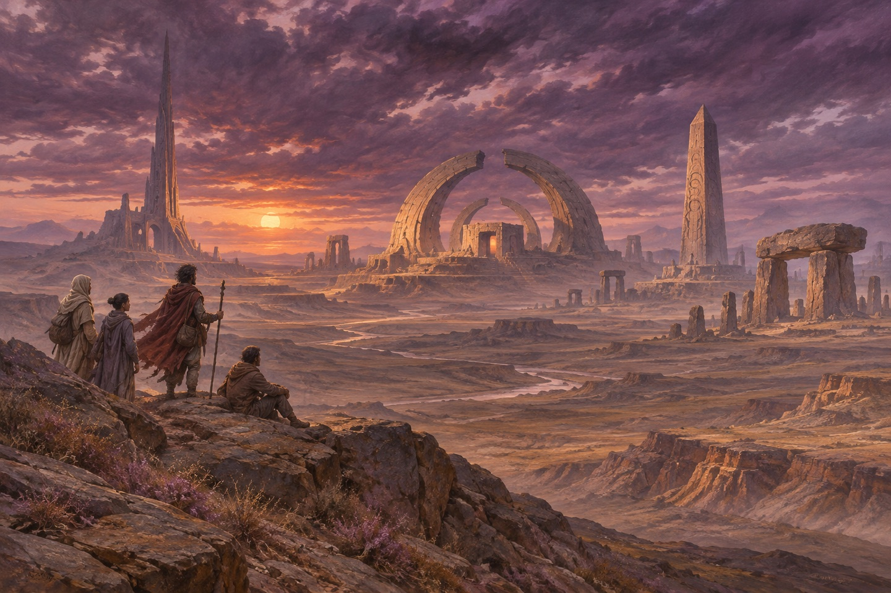

伯劳鸟
海伯利安星球上有一片地方，叫光阴冢。那里有几座建筑，会逆着时间走：今天比昨天旧，明天比今天新。冢外面有一种东西，叫伯劳鸟。它有三米高，全身是刀，四只手，没有脸。它抓人，把人挂在荆棘树上。当地人不敢靠近。他们说：它不吃人，它收集人。他们说：它把人的痛苦做成一件东西，挂在身上。当地人管那些东西叫「声音」。夜里它们会响，像有人在很远的地方哭。
征召
霸主要派人去光阴冢，跟伯劳鸟谈一次。七个人被选中。领事是最后一个收到通知的，他当时正准备辞职。他看完通知，坐了一夜，第二天说：我去。他知道自己为什么要去。他也知道别人为什么去。七个人，七个理由，每一个都跟一个死人有关。他站在窗前，看着那个方向，看了很久。他说：我这一辈子，只做过一件对的事，就是这一次。他把通知折了三折，放进内袋。他说：这一次，我不打算回来了。
七个人
他们坐一艘叫「世界树」的飞船，船上有一棵真树。七个人：领事、神父雷纳·霍伊特、军人卡萨德上校、诗人马丁·塞利纳斯、学者索尔·温特伯、圣殿骑士海特·马斯蒂恩、侦探布劳恩·拉米亚。飞船要飞几天。领事说：我们到了那儿，可能都会死。他说：所以在到之前，每个人讲一个故事。他说：讲你为什么来。船上有一颗树，是真的树，长在舱里。有人说这是为了让人记得家。
第一个故事
神父讲他的故事。他年轻时在一个叫佩森的地方传教，遇见一个叫杜雷的神父。杜雷在一个叫「火林」的地方待了七年，回来的时候身上全是十字形的疤。杜雷说：我看见它了。他说：它让我活着，是为了让我受苦。杜雷后来死了。他死的时候，身上那些疤还在发光。神父说：我这一辈子都在想，他看见的到底是什么。七个人坐在一张长桌边上，谁也不看谁。领事说：我们开始吧。他说：从谁开始。没有人回答。
出处 · 第一部 神父的故事
军人的故事
卡萨德上校讲他的故事。他打了一辈子仗，肌肉是改造的，能打十个。他被派到海伯利安，在光阴冢外面遇见伯劳鸟。他打不过它，被它放过了。他说：它没有杀我。他说：它看着我，像在看一个熟人。他说：我后来一直想回去。他说：我想问它一句话。他说：你为什么不杀我。他说：我不信神，可我信我看见了的东西。他说完，把手放在桌上，手背上有十字形的疤。他说：我这一辈子只相信两件事：枪，和运气。他说：那天两样都不管用。
诗人的故事
塞利纳斯讲他的故事。他是个诗人，写过一本很有名的诗集，然后就写不出来了。他去了海伯利安，找到一个叫「缪斯」的东西。那个东西给了他灵感，也拿走了他的一切。他说：我这一辈子最好的诗，是用我最坏的日子换的。他说：我不后悔。他说完，喝了一口酒。她说：我爱上它了。她说：这不是比喻。她说这句话的时候，脸上没有表情。她说：它给我的是一个声音。她说：那个声音一响，我就知道该写什么。她说：我不知道那是什么。
学者的故事
索尔讲他的故事。他有一个女儿，叫瑞秋。瑞秋去了光阴冢，回来以后开始逆着长：一天比一天小。医生说：她会在某一天回到出生的那一刻，然后消失。他说：她现在每天早上叫我爸爸，晚上叫我哥哥。他说：我知道有一天她会叫我什么都不是。他说完，把手捂住脸。他说：我写不出诗了。他说：我的缪斯死了，我得再找一个。他说完，笑了。她说：我昨天问她，你几岁了。她说：我四岁。她说：前天她六岁。
没有讲的故事
轮到圣殿骑士马斯蒂恩。他站起来，说：我不讲。有人问：为什么。他说：因为我的故事，讲出来就不是我的了。第二天早上，他的房间空了。床铺得很平，斗篷挂在门后，人不见了。他们在飞船里找了一遍，没有找到。七个人里，只有六个人讲完了故事。
侦探的故事
布劳恩·拉米亚讲她的故事。她是个侦探，脑子里装着一个死人的人格，叫约翰尼。约翰尼是被技术内核杀掉的。她说：他在我脑子里说话。她说：他告诉我，技术内核在计划一件事。她说：那件事跟伯劳鸟有关。她说：跟我们七个人都有关。她说完，看着领事。领事没有说话。他说：我们守的东西，比我们大。他说：我们不是为了活，我们是为了让它活着。她说：约翰尼死的时候，我抱着他的头。她说：后来他们把他的意识装进我脑子里。她说：我不知道这算不算活着。
领事的故事
领事最后一个讲。他说：我不是地球人，我是海伯利安人。他说：我的外婆是这个星球上的人。他说：我做过一件事，害死了一个星球上的人。他说：我当了霸主的外交官，替他们劝一个星球投降。他说：那个星球不肯，他们就烧了它。他说：我在飞船上看完了整个过程。她说：我脑子里有一个人。她说：她不是我，可她一直跟我说话。他说：我最后一次看见那个星球，它还在亮。他说：亮了三十秒，然后就黑了。
到达
他们到了。光阴冢在黄昏里，几座建筑立在平原上，像几块被时间咬过的石头。伯劳鸟站在最远的那座旁边，一动不动。它身上的刀在光里闪。有人说：它在等我们。有人说：它在数我们。领事说：我们过去吧。他说完，第一个往前走。他说：我做过一件事，我的国家不会原谅我。他说：我也不原谅我自己。他站在那儿，说：你们看，它没有脸。他说：可我总觉得它在笑。

故事
他们走近的时候，伯劳鸟抬起了头。它没有脸，可所有人都觉得它在看自己。它伸出一只手，指向其中一个人。那个人往前走了一步。有人说：不要。有人说：让它去。那个人没有回头。他走进去，光就暗了。他们说：它不吃人，它收集人。他们说：它把人的痛苦做成一件东西。那几座建筑在黄昏里慢慢变高，像在长。光暗下去以后，平原上什么声音都没有。有人说：他去哪了。有人说：去它那儿了。
驱逐者
这时候天上出现了火光。驱逐者的舰队来了，他们是来抢光阴冢的。霸主的海军在半路被截住了。七个人站在平原上，看着天上的火，谁也没有动。卡萨德说：我去。他说：我打了一辈子仗，不能在这儿站着。他走了。他后来没有回来。空中的火一直往下落。有人喊：他们来了。有人说：不是他们，是它。他说：你们等着。他说：如果我回不来，就替我讲完我的故事。他把枪背在肩上，走了。
没有讲完
剩下的故事没有讲完。有人说：我们还有时间。有人说：没有了。他们站在那儿，看着伯劳鸟，看着天空，看着彼此。书到这里就结束了。最后一句写的是：他们还有很多话要说。可这本书，没有下一页了。他说：我们的故事还没讲完。他说：可我们没有时间了。领事说：我们还有话要说。他说完，抬头看着天。天上还在落火。
出处 · 第一部末章